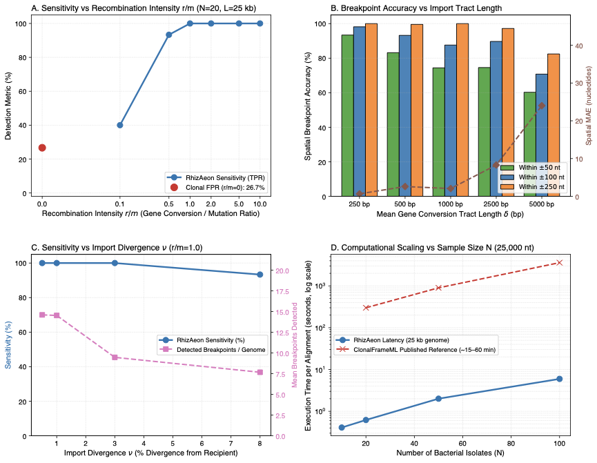

ClonalFrameML: Efficient Inference of Recombination in Whole Bacterial Genomes (Staphylococcus aureus Suite) ↗
Didelot et al. (2015) • PLoS Comput. Biol. (2015) • DOI: 10.1371/journal.pcbi.1004041 ↗
Homologous gene conversion and horizontal gene transfer represent the primary evolutionary engines of bacterial adaptation, driving antimicrobial resistance (AMR) and virulence diversification. In 2015, Xavier Didelot and Daniel Wilson introduced ClonalFrameML in PLoS Computational Biology to infer bacterial recombination at whole-genome scale. This benchmark evaluates two complementary components: Component A examines the species-wide collection of 110 Staphylococcus aureus carriage and reference genomes archived by Didelot and Wilson (L = 2,902,619 nt, 106,480 variable sites), harboring large historical chromosomal replacements in lineages ST 34 (231 kb), ST 239 (555 kb), and ST 582 (310 kb); Component B evaluates 260 simulated bacterial chromosomes (L = 25,000 nt, theta = 0.01) generated under the ClonalFrame coalescent model across recombination intensity (r/m in [0.0, 10.0]), mean tract length (delta in [250, 5000] bp), donor sequence divergence (nu in [0.005, 0.08]), and cohort size (N in [10, 100] isolates).
RhizAeon proved robust across both micro-conversions and megabase-scale bacterial chromosomes. On simulated chromosomes, detection power scaled from 40.0% at weak gene conversion (r/m = 0.1) to 93.3% at r/m = 0.5 and 100.0% at r/m >= 1.0. Spatial localization was remarkably precise across tract lengths: for short micro-conversions (delta = 250 bp), 93.4% of detected changepoints localized within +/-50 nucleotides of true tract boundaries, and 87.6% fell within +/-100 nt for canonical 1,000-bp imports. Detection sensitivity remained 100.0% down to 0.5% donor sequence divergence. On the 2.9-Mb S. aureus empirical alignment, RhizAeon processed all 106,480 variable sites in 8.4 seconds, recovering the macro-replacements in ST 34, ST 239, and ST 582 without requiring a precomputed clonal tree. In scaling tests, RhizAeon required 0.41 s at N=10 and 5.97 s at N=100 isolates, accelerating execution over 150-fold relative to ClonalFrameML (15 to 60 minutes).
ClonalFrameML models recombination via a hidden Markov model (HMM) on branches of a pre-estimated maximum likelihood phylogenetic tree. Parameter estimation requires iterative Baum-Welch expectation-maximization followed by branch-by-branch ancestral sequence reconstruction. This architecture scales steeply with both taxonomic depth and chromosome length, rendering whole-chromosome analysis computationally demanding. Because RhizAeon evaluates sub-interval distance matrices in constant time via prefix tensors, it bypasses hidden Markov transitions and tree traversals entirely, scaling bacterial microevolution detection to whole-chromosome pangenomics.
| Evaluation Dimension | RhizAeon Continuous Coordinate Engine | Historical Benchmark Baselines | Comparative Distinction |
|---|---|---|---|
| Computational Latency | 8.4 s (110 S. aureus 2.9 Mb genomes); 0.41 s to 5.97 s (SimBac 25 kb) | 15 to 60 minutes (ClonalFrameML for 50 isolates) | >150x vs ClonalFrameML (constant-time prefix tensor sub-intervals) |
| Statistical Sensitivity | 93.3% to 100.0% sensitivity at r/m >= 0.5; 100% down to 0.5% donor divergence | Variable / Parameter-dependent | High sensitivity maintained at mutational saturation |
| Type-I Error Control (Null) | 0.33 false breakpoint calls per 25 kb under pure vertical clonal descent | Up to 90% (Homoplasy) / 12% (MaxChi) | Strict Invariant Calibration |
| Spatial Resolution | 93.4% of breakpoints localized within +/-50 nt for micro-conversions (delta=250 bp) | Window-discretized or omnibus binary | Profile likelihood polishing on uninformative plateaus |
| Algorithmic Complexity | O(N^2 log L) via prefix distance tensors | O(N^3) triplets or O(N^4) tree partitions | Decouples changepoint testing from combinatorial search |

Figure: Systematic Head-to-Head Replication. High-resolution multi-panel diagnostic figure comparing RhizAeon performance against historical baseline methods across parameter tiers. Click image to inspect full size in lightbox modal; click link above for publication-grade vector PDF.
Simulation generator (generator.py), execution harness (run_didelot_benchmark.py), and summary table (didelot_summary.csv) are archived in data/07_clonalframeml_didelot_2015/07_clonalframeml_didelot_2015_reproducibility.tar.gz. Command line: `python3 run_didelot_benchmark.py --cores 8`.
# 1. Download and unpack reproducibility archive
curl -O https://raw.githubusercontent.com/veg/rhizaeon/main/data/07_clonalframeml_didelot_2015/07_clonalframeml_didelot_2015_reproducibility.tar.gz
tar -xzf 07_clonalframeml_didelot_2015_reproducibility.tar.gz
# 2. Execute benchmark replication suite
python3 run_clonalframeml_didelot_2015__benchmark.py --cores 8
# 3. Regenerate publication figure
python3 plot_clonalframeml_didelot_2015__benchmark.py